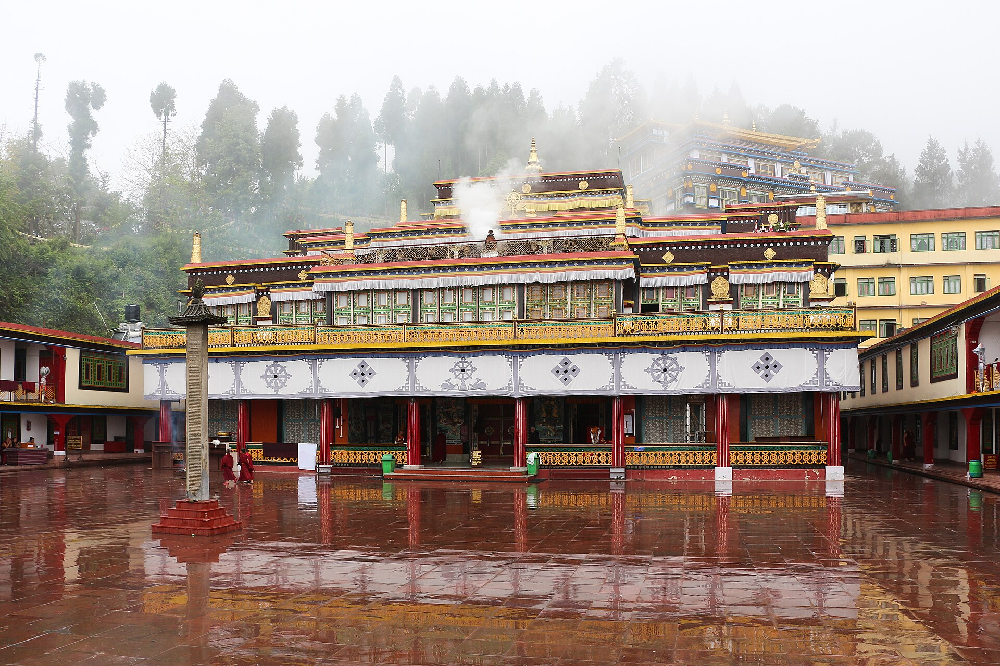

Gangtok
A clean, colourful hill capital where prayer flags flutter above cafés and Kanchenjunga watches over the town.


About Gangtok
The gateway to Sikkim - monasteries, high-altitude lakes and a warm Himalayan welcome.
Perched on a ridge at 1,650 metres, Gangtok is the capital of Sikkim and the base for almost every journey in the state. Its pedestrian-only MG Marg, spotless streets and easy-going cafés make it one of the most pleasant hill towns in India.
Beyond the town lie some of the Himalaya's great sights: the glacial Tsomgo Lake, the historic Nathu La pass on the old Silk Route, and the Buddhist monasteries of Rumtek and Enchey. Gangtok is also where permits for North Sikkim - Lachen, Lachung and Gurudongmar - are arranged.
Best months to visit Gangtok
March to June & October to December
| Destination | Jan | Feb | Mar | Apr | May | Jun | Jul | Aug | Sep | Oct | Nov | Dec |
|---|---|---|---|---|---|---|---|---|---|---|---|---|
| Gangtok |
Top experiences in Gangtok
Tsomgo Lake
A glacial lake at 12,300 ft, frozen in winter and ringed by rhododendrons in spring.

Rumtek Monastery
The largest monastery in Sikkim and seat of the Karma Kagyu lineage.
MG Marg
A traffic-free promenade of cafés, bakeries and handicraft shops.
Prayer flags & viewpoints
Ganesh Tok, Hanuman Tok and Tashi Viewpoint for sweeping Kanchenjunga views.

Local experts for Gangtok
Our team plans every detail of your Gangtok journey - handpicked stays, experienced mountain drivers, permits and timings that make the most of the weather - so all you have to do is enjoy the view.
Plan your Gangtok trip
See our day-by-day Gangtok itinerary, or tell us your dates and travel style and we will tailor it for you - stays, drivers, permits and all.
Questions about Gangtok
A quick overview of our most-asked questions. Still unsure? Ask us on WhatsApp.
01What is the best time to visit Gangtok?
March to June brings pleasant weather and blooming rhododendrons, while October to December offers the clearest mountain views. Monsoon (July to September) is lush but landslides can affect roads.
02Do I need a permit for Gangtok?
Indian nationals do not need a permit for Gangtok itself. Foreign nationals need a Restricted Area Permit, usually issued at the Rangpo border or online. Tsomgo Lake and Nathu La require separate day permits, which we arrange for you.
03Can foreign nationals visit Nathu La?
No. Nathu La is open to Indian nationals only. Foreign guests can still visit Tsomgo Lake and Baba Mandir with a permit.
04How many days do I need?
Three to four nights covers Gangtok, Tsomgo Lake and the monasteries. Add two to three nights to include Lachen and Lachung in North Sikkim.
05Is Gangtok good for families?
Yes. Gangtok is safe, walkable and has good hotels. For high-altitude day trips we plan gentle pacing and warm clothing for children and older travellers.
More Himalayan destinations


Why travel with LAVIGO?
Loved Gangtok? Book our Gangtok trip with day-by-day plan and price, or tell us your dates and budget for a custom itinerary – stays, drivers and permits included.